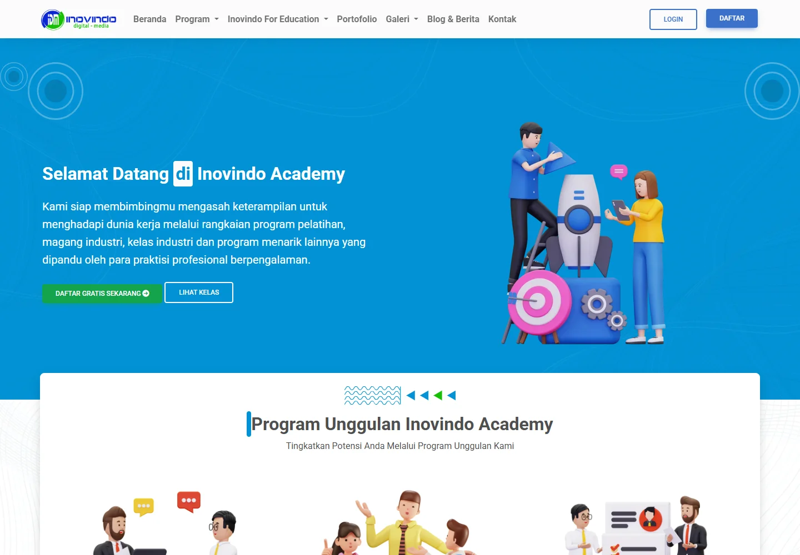
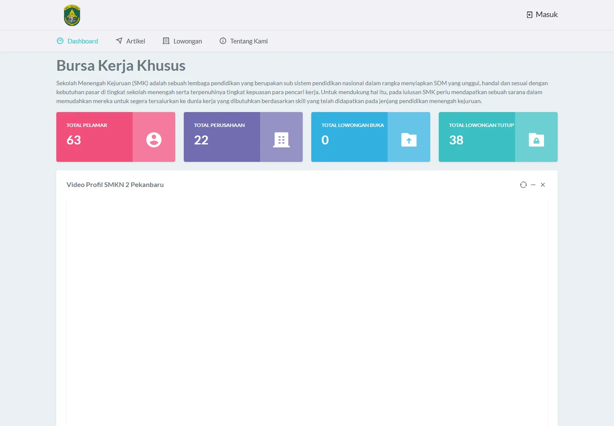
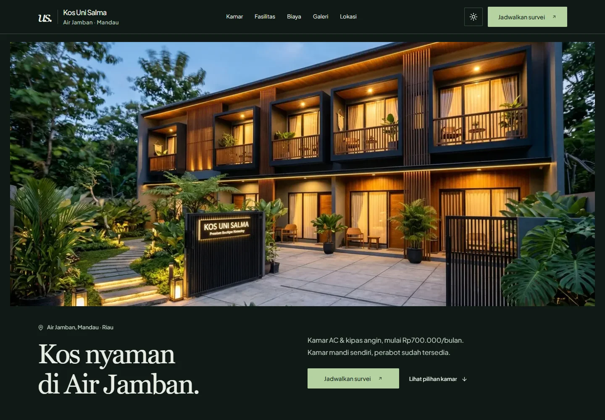

Inovindo Academy.
Training and internship programs, presented online. I contributed to the website during my programmer internship at Inovindo.
- Technologies
- Laravel 9, ASP.NET
- Period
- to

Muhammad Fajri Afriyansyah
APIs, business applications, and automation with .NET and Node.js. Informatics Engineering, 2020–2024.

Contributed during my internship at PT. Inovindo Digital Media.
Training and internship programs, presented online. I contributed to the website during my programmer internship at Inovindo.

Bursa Kerja Khusus for SMKN 2 Pekanbaru.
A freelance project for the Bursa Kerja Khusus (BKK) at SMKN 2 Pekanbaru. The portal helps vocational school graduates find job vacancies and apply for available positions.

Room information and visit enquiries for Kos Uni Salma.
A freelance website for a boarding house in Air Jamban, Mandau, Riau. Visitors can explore room options, facilities, and photos, compare rental costs, and arrange a visit through WhatsApp.

Data management, mapping, and a home service marketplace.
A driver services and data management system. I designed the project, implemented the application with ASP.NET, and built the Oracle database.
A web-based map of traffic congestion in Pekanbaru. My contributions included the project proposal, field surveys, CodeIgniter 3 development, and Leaflet integration.
An e-commerce website for home services. I designed the website and implemented it using CodeIgniter 3.
Software and backend development, from internship to full-time work.
.NET / Node.js / SQL Server / SPFx / Power Automate / Azure DevOps
C# / ASP.NET Core / LINQ / SQL Server / RESTful APIs
Application maintenance, web development, and an industry internship.
PT. Sumatra Timurindonesia
Laravel / CodeIgniter 3 / React Native / ASP.NET Core Web API
Laravel 9 / ASP.NET / Internship management
View project previewA calendar of my GitHub contributions. View @fm-dev
Enable JavaScript to load the contribution calendar, or view my GitHub profile.
Activity shown on my GitHub profile. Updates may take about an hour to appear.
I develop backend services, web applications, and workflow automation. I studied Informatics Engineering at Politeknik Caltex Riau from 2020 to 2024.
Informatics Engineering (D4)
SMAN 3 Mandau, Natural Sciences, 2016 to 2018.
“Focus on doing your best rather than being the best. The results are a bonus.”
Muhammad Fajri Afriyansyah
Co-authored research with Shumaya Resty Ramadhani on prototyping, user acceptance, and usability for the Disebut Kopi application.
Read publicationNovember 2024
Supported computational thinking training for SMAN 5 Pekanbaru students alongside lecturers from Politeknik Caltex Riau.
View activity25 November 2021
Provided web development mentoring at Caltex Techno Scientist and served on the Timeline Coordinator System team for the ITSA General Assembly.
Technologies I use across backend, web, mobile, and automation work.